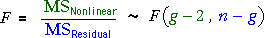
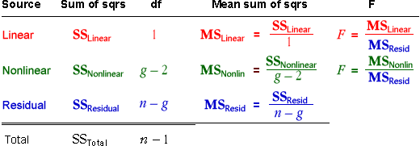
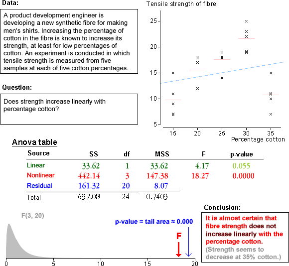

F ratio and p-value
As with the earlier quadratic test, linearity can be tested with an F ratio that compares the mean nonlinear and residual sums of squares. It has an F distribution when the underlying model is linear. If there are g distinct x-values (groups),

High values of the F ratio give evidence of nonlinearity, so the p-value is the upper tail area from the F distribution.
Analysis of variance table
The calculations are usually presented in an analysis of variance table that is similar to those that were used earlier.

If it is concluded from the F ratio for the nonlinear sum of squares that there is no curvature, it is then possible to use the F ratio for the linear term to test whether there is any relationship.
Examples
Analysis of variance is used to test for curvature in several data sets below. Read the conclusion for each test carefully.
